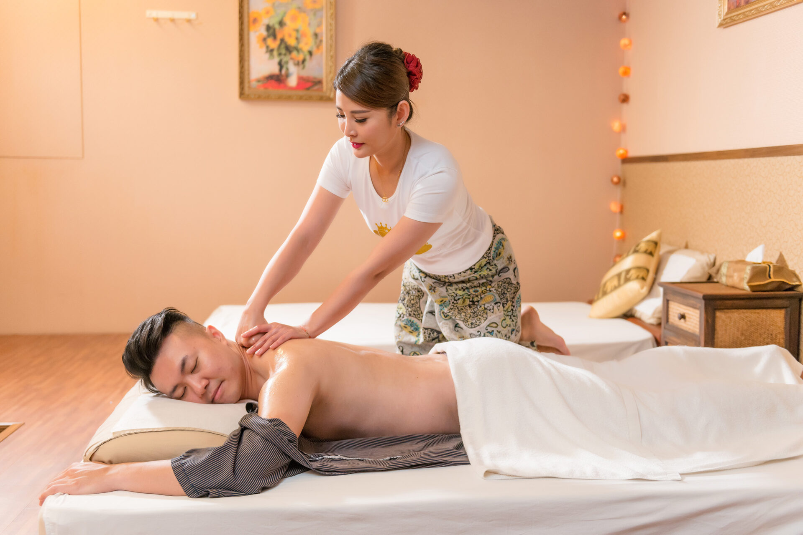

按摩服務風格與玩法指南：找到真正適合你的按摩風格
每一家會館、每一位美容師，都有不同的按摩風格與按摩類型。有人喜歡全程安靜、專心放鬆；有人則偏愛聊天、互動感強一點；也有人把按摩當成一種「儀式感」，幫自己在忙碌生活裡按下暫停鍵。
這一頁的按摩服務風格與玩法指南，會用白話方式帶你看懂常見的按摩風格分類、適合族群與選擇技巧，讓你不再只是「隨便按」、憑運氣遇人，而是能用一套自己的按摩攻略來挑選真正適合的服務。
不論你是在搜尋 「按摩風格」、「按摩類型」，還是想找一篇實用的按摩攻略，都可以把這一頁當成你規劃體驗前的「說明書」。
先搞清楚三大按摩風格：放鬆派、聊天派、氛圍派
在安排按摩前，最重要的不是先看價錢，而是先搞清楚：「我喜歡的按摩風格是什麼？」這會直接影響你當天的體驗感。如果把台北常見的按摩類型粗略分類，大致可以分成三大路線：
-
① 放鬆派：專注身體舒壓的按摩風格
適合長期久坐、肩頸痠痛、腰背緊繃的人。重點在於力道、節奏、手技與身體感受，過程中可以安靜閉眼、甚至小睡。這類按摩類型比較像是「幫身體做保養」，情緒互動不是主軸。 -
② 聊天派：重視陪伴感的按摩風格
如果你工作壓力很大、腦袋停不下來、常覺得「心很累」，那麼適合你的可能是偏聊天、互動感比較強的按摩風格。透過舒壓＋說話，把情緒一起放下。 -
③ 氛圍派：儀式感與放鬆感兼具
有些人做按摩不只求「舒服」，還在乎整體氛圍：燈光、音樂、香氣、空間感，以及美容師的風格與互動節奏。這類按摩類型，比較像是幫自己安排一個「專屬儀式」，從踏進門那一刻，就開始進入放鬆狀態。
你可以先在心裡問自己一句：「我現在最需要的是身體放鬆、情緒陪伴，還是儀式感？」這會是所有按摩攻略裡面，最重要的一步。
常見按摩類型與適合對象：選對類型，體驗差很多
了解按摩風格後，我們可以再更細分幾種常見的按摩類型，幫你對照自己目前的狀態：
- 全身精油舒壓： 透過大範圍油壓與推拿，放鬆肩頸、背部、腰椎等長期緊繃的部位。適合久坐辦公、長期用電腦、時常肩頸痠痛的族群。
- 局部加強（肩頸 / 腰背）： 如果你有明確的「痛點」，例如長期駝背、肩膀像扛石頭，這類按摩類型會把時間集中在幾個關鍵部位，效果更明顯。
- 放鬆＋聊天混合型： 這是很多熟客最愛的按摩風格之一：身體有得到放鬆，心情也有人陪你分擔。適合工作壓力大、需要紓壓又不想太安靜的人。
- 溫柔療癒系： 力道不一定大，但節奏很穩、觸感細緻，給人的感覺比較像被照顧、被安撫。適合情緒比較敏感、近期較低潮或失眠的族群。
- 活潑帶節奏型： 部分美容師個性較外向、很會帶氣氛，擅長聊天、開玩笑、讓人快速放鬆。這種按摩風格很適合第一次來、容易尷尬或怕冷場的人。
當你越了解這些按摩類型，就越能在預約前，用簡單幾句話，把自己的需求講清楚，讓幹部一次就抓到你要的是哪種按摩風格。
實用按摩攻略：預約時這樣描述自己，幹部最有感
很多人在預約按摩時，只說「隨便安排」或「你幫我看」，結果當天體驗「還行，但沒有到很對味」。其實只要在對話中，多加一點關於按摩風格與習慣的資訊，幹部就能更精準幫你安排。
你可以直接照下面這幾種說法來用：
-
重度上班族：
「我平常坐辦公室、肩頸很緊，想要力道比較到位、偏放鬆型的按摩類型，聊天不用太多，也可以。」 -
壓力很大、想找人說話：
「最近壓力有點大，想要找比較會聊天、氣氛輕鬆的按摩風格，但按摩本身也要有感覺。」 -
第一次來，怕尷尬：
「我是第一次來做這種舒壓，會有點緊張，想找互動自然、會帶節奏的美容師。」 -
只想安靜放空：
「今天狀態有點累，想要偏安靜、儀式感強一點的舒壓，主要想放空。」
這些描述表面上只是聊天，但對幹部來說，是非常清楚的按摩攻略訊號：你喜歡哪種按摩風格、能接受多少互動、當天身心狀態如何。資訊越完整，越容易安排到適合的按摩類型與人選。
關於按摩風格的幾個誤解：不是力道越大就越好
許多人一開始對按摩的想像，會落在幾個固定觀念上，例如「力道一定要超大才有效」、「越痛越有感」、「越安靜代表越專業」。但以實際接待經驗來說，這些都只是部分情況，不能當作唯一標準。
-
誤解一：越痛代表越專業
好的按摩風格，應該是「舒服中帶有釋放感」，而不是一味忍痛。力道大小應該跟當天身體狀態、長期姿勢有關，而不是盲目追求痛感。 -
誤解二：完全不聊天才專業
有些按摩類型適合安靜專注，也有一些風格本來就包含陪伴與互動。重點在於「你喜不喜歡」，而不是某種風格絕對比較高級。 -
誤解三：每次都要選同一種按摩類型
有時候你需要的是深層舒壓，有時候你需要的是有人陪你說話。懂得依照當下狀態調整按摩風格，比死守一種選擇更聰明。 -
誤解四：不好意思講自己的習慣
很多人明明不喜歡太吵、或不習慣被拍打太大力，卻覺得「講出來很尷尬」。事實上，越會講自己需求的人，越容易得到舒服的體驗。
真正適合你的按摩攻略，從來不是跟別人一樣，而是「你能誠實面對自己的身體與情緒」，再去挑選相應的按摩風格與按摩類型。
台媚十八會館的風格配對：不是只看外型，而是看合不合你
在台媚十八會館，我們接到預約時，不會只丟一串名字叫你自己選，而是會先用幾個問題，幫你找到適合的按摩風格與美容師類型：
- 你平常的工作型態是什麼？（久坐、常出差、輪班、外務跑客戶…）
- 最近比較累的是身體，還是心情？
- 你喜歡偏安靜、偏聊天，還是中間值？
- 你以往做按摩的經驗中，有沒有特別喜歡或不喜歡的地方？
透過這些答案，我們會大致推測你比較適合哪幾種按摩類型，再從現有班表中，找出風格與你相近、節奏可能合得來的美容師。
對我們來說，你不是「今天的一號客人」，而是需要被好好安排的一個人。當按摩風格對了，價格、環境、流程才有機會一起變成一段好的記憶。
找到自己的按摩風格，讓每一次放鬆都更有價值
不管你是在台北生活、在林森附近上班，或只是偶爾路過中山區，一定多少都曾經在 Google 搜尋過：按摩推薦、按摩風格、按摩類型、按摩攻略。 與其每次都靠運氣，不如從今天開始，學會用自己的標準來挑選。
當你能說出：「我喜歡的是偏放鬆型、不要太吵、力道中上」、「我需要的是有人陪我聊天的按摩風格」、「我今天只想安靜做個儀式感舒壓」，你就已經比多數人更接近真正的放鬆。
如果你也想為自己建立一套專屬的按摩攻略，歡迎先透過 Line 或 Telegram 跟我們聊聊。只要你願意多說一點，我們就能幫你在眾多按摩類型裡，找出最貼近你狀態的那一種。
下次當你覺得累、不想再硬撐的時候，也許就是該幫自己安排一場「風格正確的按摩」。而我們會在台媚十八會館，等你一起把壓力放下。